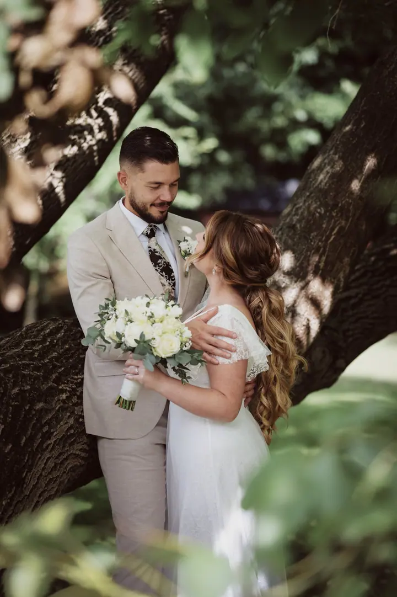
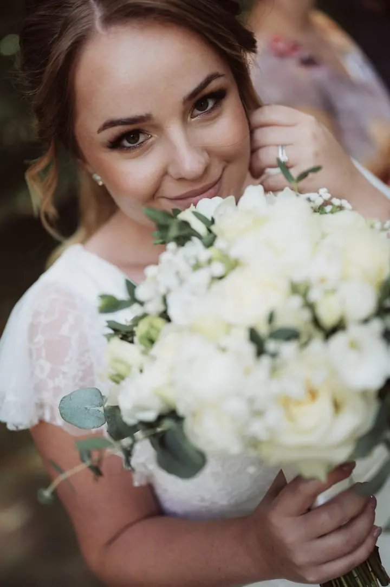
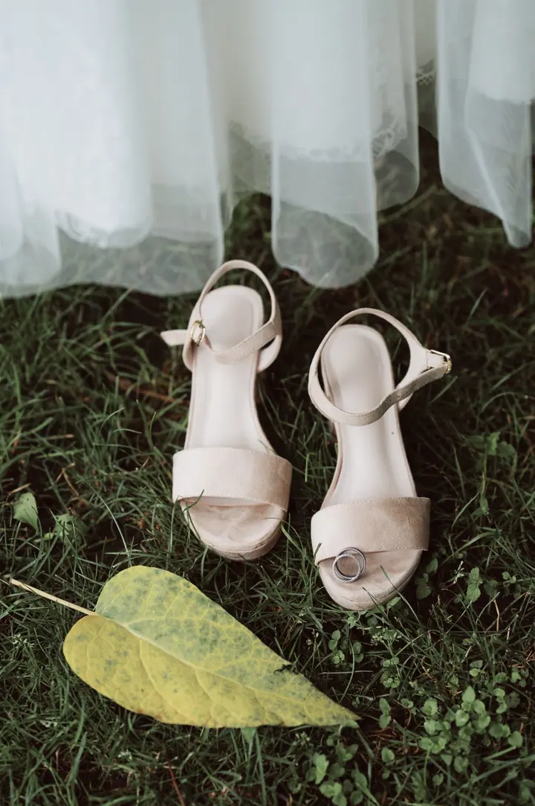
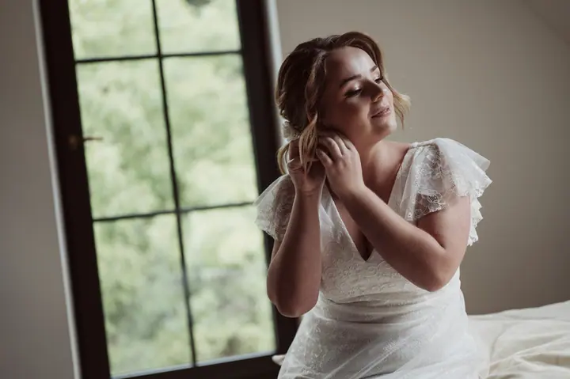

Svatby
Svatební focení mám rád a věnuji se mu řadu let. Snažím se držet trendů a zároveň splnit přání a představy vás, snoubenců.

Jmenuji se Radim Horák a jako svatební fotograf působím už řadu let, převážně na Severní Moravě. Svatební focení mám rád, je prostě mou zábavou. Kromě svateb fotím i rod…
Rezervovat termínSvatbám se věnuji už dlouhou dobu. Za tu dobu jsem nabral spoustu zkušeností, ale pořád se snažím zlepšovat a sledovat, kam se svatební fotografie posouvá.


Nejdůležitější jsou pro mě vaše přání a představy. Chci, abyste od svého fotografa dostali přesně to, co hledáte, a aby váš den nezůstal jen ve vzpomínkách.
Nefotím jen svatby. Pro firmy fotím reportáže a corporate snímky, mezi klienty byly například Škoda Auto Česká republika, Auto Heller, VOP CZ nebo Hotel & Garden U Holubů. Působím hlavně na Severní Moravě, ale po domluvě přijedu kamkoli.
Co fotím
Svatební focení mám rád a věnuji se mu řadu let. Snažím se držet trendů a zároveň splnit přání a představy vás, snoubenců.
Fotím corporate snímky pro firmy. Pracoval jsem například pro Škoda Auto Česká republika, Auto Heller nebo Takenaka Europe.
Fotím reportáže z firemních i dalších akcí. Fotil jsem třeba pro HEIPARK Tošovice, Hotel Zámek Zábřeh nebo SOUNDPOINT.
Kromě svateb fotím i rodinné fotografie. Domluvíme se na místě a podobě focení, která bude sedět právě vám.
Postup
Napište mi nebo zavolejte a pošlete termín a místo svatby. Ověřím, jestli mám volno.
Povíte mi, jak si svůj den představujete a na čem vám záleží. Podle toho naplánujeme focení.
Budu s vámi od příprav přes obřad až po focení ve dvou. Vy si užíváte den, já fotím.
Fotky pečlivě vyberu a upravím a pošlu vám je, abyste se k vašemu dni mohli kdykoli vrátit.
Otázky
Většinou na Severní Moravě, ale po domluvě se můžeme dohodnout na jakémkoli místě focení.
Ano, fotím také rodinné foto, reportáže a firemní propagaci.
Určitě. Snažím se na sto procent plnit přání a představy snoubenců, takže vaše nápady rád zapracuji.
Ceny najdete v ceníku na mém webu. Pokud si nebudete jistí, co vybrat, napište mi a společně vymyslíme řešení.
